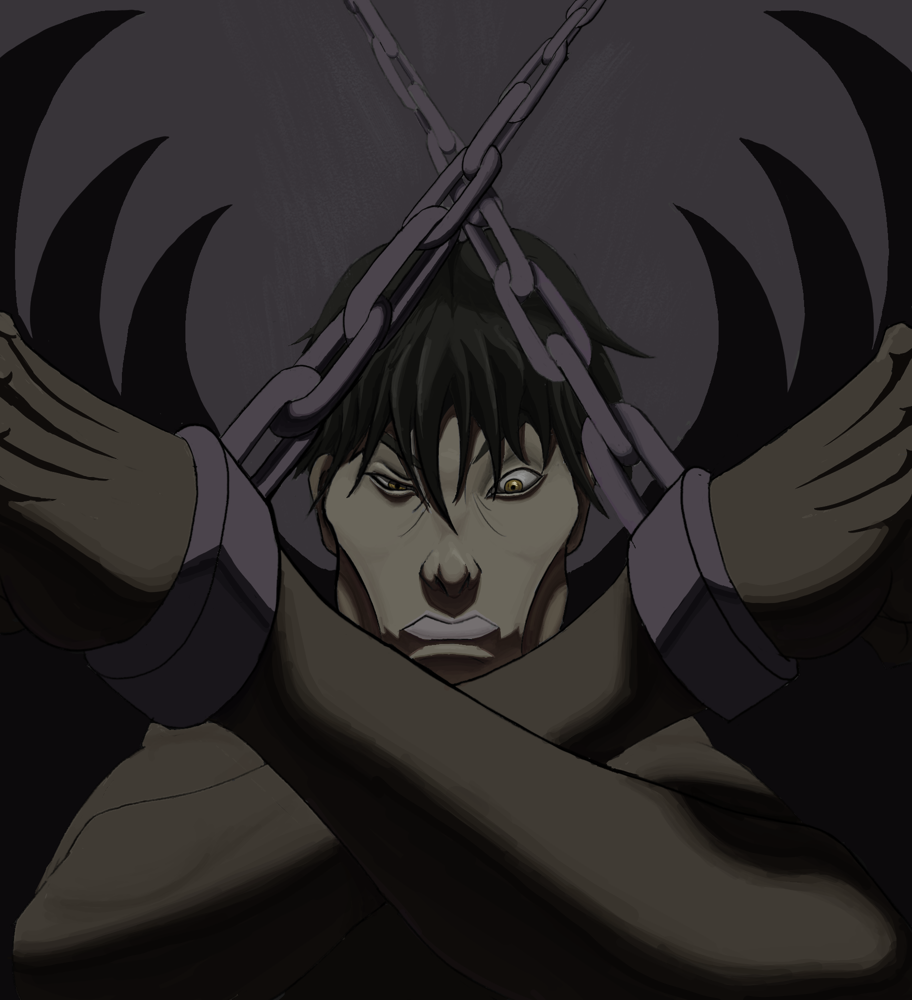
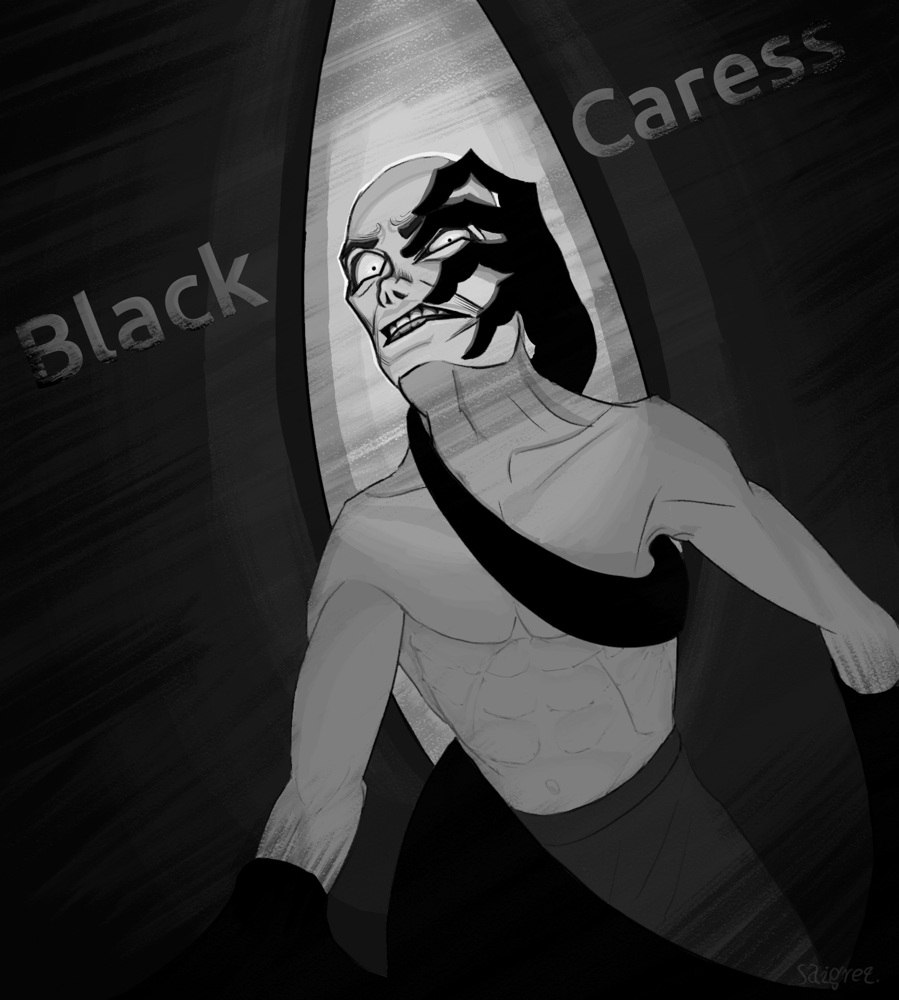
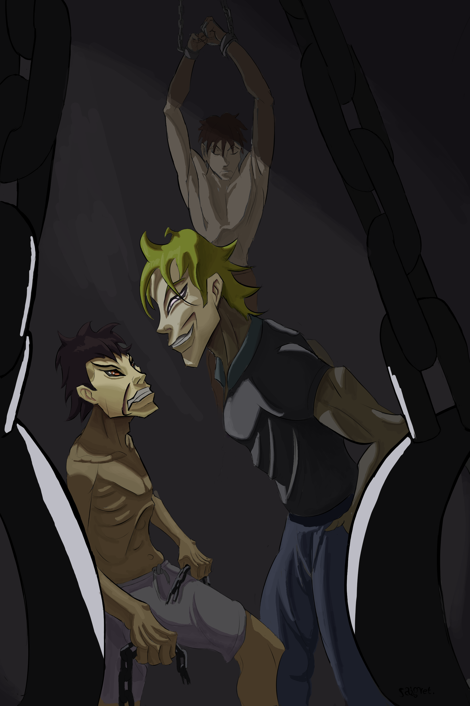
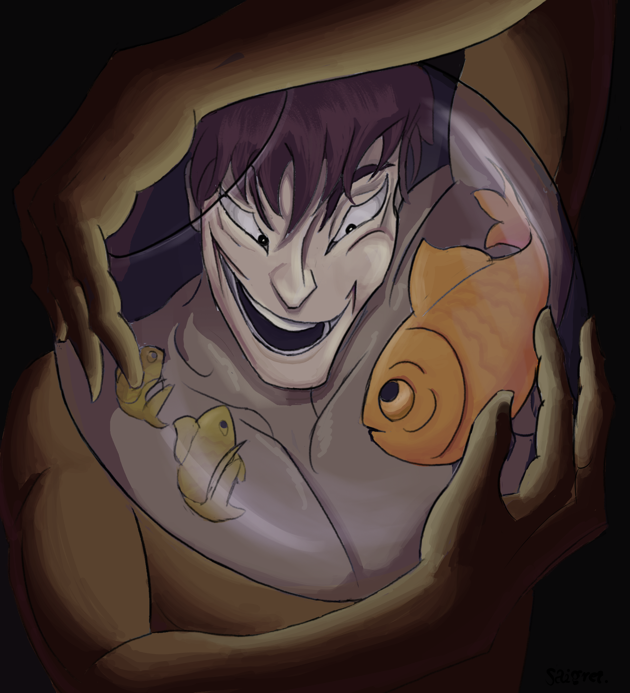

Growth / pain / cruel salvation
Chains of Grow
A symbol for painful transformation: the cold force that wounds you, but pulls you away from the false comfort that was quietly keeping you trapped.
Symbolic cover art for dark music
I create symbolic cover art and visual concept directions for dark, emotional, and experimental musicians. The goal is simple: take the emotional core of the release and turn it into an image that feels intentional, memorable, and harder to ignore.
Because even collapse needs branding.

For dark ambient, metal, industrial, post-punk, doom, noise, horror synth, experimental, and other emotionally heavy releases.
Selected work
These pieces show the kind of visual thinking I build for music: one strong symbol, one emotional contradiction, and a composition that can carry the identity of a release.
Growth / pain / cruel salvation
A symbol for painful transformation: the cold force that wounds you, but pulls you away from the false comfort that was quietly keeping you trapped.

Suppression / possession / inner pressure
For songs about being pulled by something intimate, unwanted, and difficult to escape.

Conflict / control / rage
Violence framed as captivity. A visual direction for music about resentment, domination, pressure, and emotional restraint.

Revenge / self-destruction / temptation
Destroying your own path just to feel the warmth of revenge. A symbol for desire turning against the person who obeys it.
The offer
Some releases already have artwork. Some have nothing yet. Some only need a sharper visual direction for the next project. The concept pass exists for that gap: a low-friction way to explore symbols, mood, and cover ideas before deciding on a full piece.
2–3 rough symbolic cover directions based on your track, title, lyrics, or mood. Each direction includes a visual idea and rough composition.
A finished square cover built around the strongest direction. The concept pass is deducted from the final cover price if we continue.
For artists who already have one cover handled, but want stronger visual ideas for a future single, EP, album, or merch piece.
Process
Send the song, lyrics, title, mood, references, or emotional direction. A rough explanation is enough.
I translate the mood into a few symbolic directions: objects, figures, compositions, and visual hooks that could carry the release.
Use the concept pass as direction, continue into a full cover, or save the strongest idea for a future release.
Why symbolic cover art
A good cover should not only look “dark.” It should make the listener feel that the release has a world behind it. One clear symbol can do more than decoration: it gives the music a visual memory.
The image needs to work at small size: Bandcamp, Spotify, social posts, thumbnails, and release announcements.
The symbol should have a second layer: contradiction, pressure, temptation, collapse, grief, or transformation.
A strong visual direction can extend into future covers, merch, promo images, or the general atmosphere of the project.
Previous client proof
Different niche, same core skill: turning fear, pressure, isolation, and psychological tension into a clear image. Now I am applying that same visual translation to dark music covers.
“Saigret successfully captured the story’s tone by conveying the woman’s fear through her facial expression. By enlarging the walls and making them loom over her, the piece effectively captures the ominous presence of the Wall.”
“The cover perfectly captured the tone of the story... a beacon in darkness where the perceived solitude is about to be broken.”
“I was very impressed with the quality of Saigret’s artwork. It really brought my story to life in a new way. He did a great job capturing the psychological elements I was trying to convey.”
Work with me
Send the song, title, lyrics, current cover status, or emotional direction. I will reply with the next step. For most cold projects, the cleanest start is the $40 concept pass.
Concept Pass: $40. Full covers currently start at $120.
Direct contact: saigret1@gmail.com